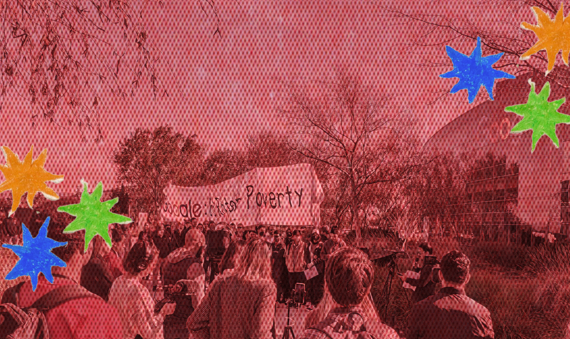

Circuit Breakers is a gathering for all workers, organizers, and activists in the tech industry to come together and learn, build community, strategize, and recognize our collective power.
San Francisco | October 12-13, 2024
We consider all workers in the tech sector, from software engineers, to sales, to ride-share drivers, as "tech workers." This conference is organized by volunteers from across the tech labor movement, including many central organizers from last year’s Labor Notes Tech Labor Conference.
Values
We believe the tech labor movement must be worker-led, wall to wall, rooted in militant, international and class struggle oriented experience. These strengths are critical for workers to oppose social harms such as colonial oppression, surveillance, and war.
Sessions
Most sessions will be led by rank-and-file workers. Here is a taste of some of the sessions your fellow siblings in labor are planning:
💪 Data Workers Speak w/ Alex Hanna from Distributed AI Research Institute
The modern AI gold rush would not be possible if it was not for data workers: people who labor on the data which is used to train huge AI models, who moderate the toxic content which goes into and comes out of the models, and who stress test them for potential harm and abuse. This session aims to share the stories of data workers by hearing from the workers themselves, as well as organizers and academics who work alongside them. Workers will discuss their own work and the complicated web of outsourcing which companies construct to keep them in the dark and away from levers of accountability, the stress and trauma of the work itself, and their efforts at organizing on the job.
⏰ Taking Back Our Time w/ Angela & John from the New York Times Tech Guild
Where can tech workers enter the fight of winning more time? NYTTG workers will discuss organizing strategies toward rank-and-file priorities, from ending unpaid on-call to winning the four-day work week. Attendees will look to labor history for clues to how tech workers can contend with the threat of job cuts driven by automation and discuss building solidarity across the labor movement in the struggle for all workers to win shorter hours.
🌐 Global Value Chains w/ Yonatan Miller from Tech Workers Coalition
This panel focuses on how to organize on a global scale. Tech is global, so our organizing must act globally. Attendees will learn to identify local hubs that can build transnational structures. Hear from workers who have direct experience navigating the risks and benefits of transnational structures and who’ve overcome labor fragmentation. Different models include “AppleTogether”, Amazon Workers International and the many informal networks.
🤝 Generative AI Labor Impacts w/ Tamara Kneese from Data & Society Research Institute
This interactive workshop provides insight into how Generative AI’s impacts work in 2024 through a time capsule of worker perspectives. Attendees will hear voices from workers and organizers in tech and beyond on how Generative AI is (or is not) affecting the day-to-day lives of workers and how it’s impacting managers’ expectations of productivity.
🎲 Let’s Play Organize Big Tech w/ Collective Action in Tech
This boisterous role playing game encourages players to respond to real scenarios faced by workers at a fictional AI startup through improvisation and creativity. The game guides participants through a series of ethical dilemmas stemming from management’s exploitative actions and encourages workers to come to creative solutions that build worker power as a counterbalance to management’s structural power in the workplace.
🌹 Self-Care Won't Save Us w/ Helen from Amazon
This session explores the theory of alienation we face at work and dissects the impact it has on our lives. Attendees will get a framework for understanding communal care as a necessary and integral part to revolutionary movements & demonstrates applications and strategies on boundaries, burnout, and growth that can help workers organize effectively.
🪓 Fighting Layoffs w/ Matt from Socialist Alternative
Join a panel of workers from some of the most militant organizing efforts across the industry to discuss how workers organize in the face of mass layoffs. Panelists will share their direct experience organizing, how they maintained solidarity, navigated heated debates, and escalated at the right time.
Agenda
Saturday, October 12
9:00 am PT: Registration
10:00 am - 12:30 pm PT : Keynotes
12:30pm - 2:00 pm PT : Lunch (not provided)
2:00 pm - 6:00 pm PT : Sessions
Sunday, October 13
[Tentative schedule]
9:30 am - 10:00 am PT: Registration
10:00 am - 1:00 pm PT: Sessions
There will also be space available for attendees to self-organize their own workshops and discussions!
FAQ
Where and when is the conference?
Circuit Breakers will be in San Francisco. It will be a 2-day event over the weekend of October 12-13, 2024. We will provide the exact location to attendees, but expect it to be near Golden Gate Park.
Where can I buy tickets?
Tickets are available here for one last day on Monday, September 30.
Can I attend this conference remotely?
This conference will be in-person only, both for logistical reasons and to respect the privacy of our attendees and their organizing. We do anticipate holding future virtual events and panels drawing on the topics and speakers of the most attended and best-received workshops.
Who is this conference for?
This is a conference for rank-and-file workers in tech who have direct experience organizing, who want to get more involved in organizing, or even have no experience as an organizer. This gathering is not for general observers like journalists or researchers. If you fall into one of these categories, you might be eligible if you have significant ties to tech organizing or the labor movement and consider yourself, broadly speaking, a participant or supporter. If you are unsure, we encourage you to reach out to confirm if this conference is for you.
What is a tech worker?
A tech worker is any worker who works in the tech industry or for a tech company. This includes roles from software engineers to product managers, IT, sales, ride-share drivers, warehouse workers, delivery drivers, to any person who works for a tech company. Workers from all of these roles and more are encouraged to attend Circuit Breakers.
Accessibility
We are aware that our conference falls on Yom Kippur, the high holy days for our Jewish community members.
We will have programming for our Jewish community members who choose to attend our conference, including dedicated prayer rooms and breaking the fast end of Shabbat/Saturday evening. We regret that some members won’t be able to attend. If you are interested in co-organizing a Havdala/Yom Kippur ceremony, please get in touch with yonatan@techworkerscoalition.org
Covid Policy
We care about the safety and health of our fellow workers. All attendees will be required to rapid test for Covid within 24 hours of the conference. At registration we will ask to see documentation of your negative test results and all attendees will be expected to mask unless eating or speaking on stage.
How do I get in touch?
You can contact the conference organizers at conf (at) techworkerscoalition.org
Circuit Breakers is organized by: